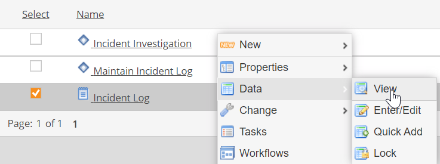
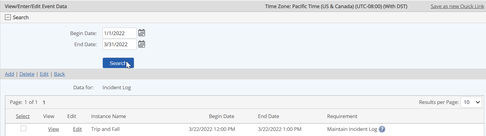
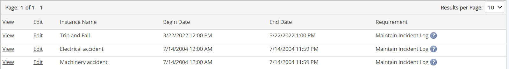
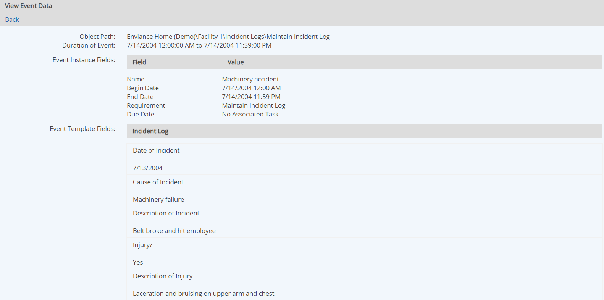
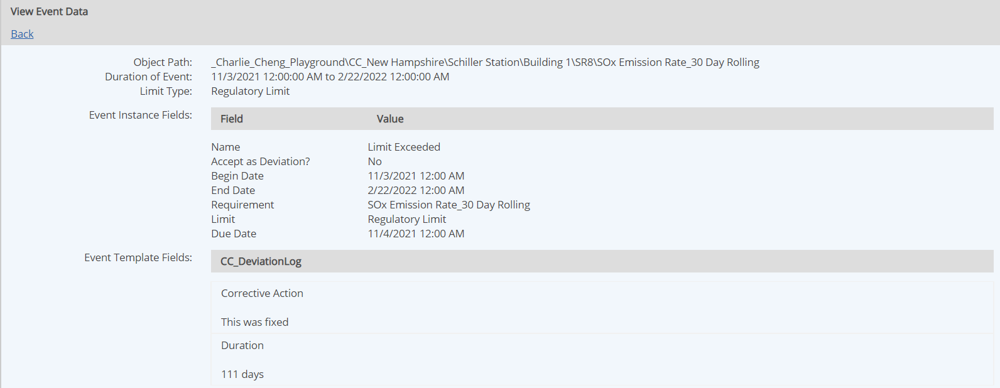

An Event Log stores data related to events. Each record in the Event Log represents a single occurrence, or distinct event.
You may view the records in the event log directly in the system, or create an event report to filter records and output them in a desired format. For more about reports, see Event Report.
To view event log records:
Right click and choose Data > View from the popup menu.

The event log records are displayed. Each row represents one event, or occurrence.
If the event log monitors more than one requirement, one instance is created for each monitored requirement for each period that data was in a Not Determined compliance status. For example, if the event log monitors two requirements, and the status of both was Not Determined at the same time, two events are recorded.
The summary table shows the instance name, Begin and End Dates, and the requirement it is associated with. For a numeric requirement, the type of limit it monitors, Regulatory or Internal, is also shown. When both internal and regulatory limits are tracked, and both limits are exceeded, two events will be created.
You can filter the event log by date of occurrence.
Click Search.

To view log data for an event, select the View link for the instance.

The details of the event are displayed.

Details for an automatic event may include automatically generated data (such as regulatory limit high and low), calculated fields (such as duration and average data value), and supplemental information to document the event (e.g., cause of deviation, corrective action, etc.).
